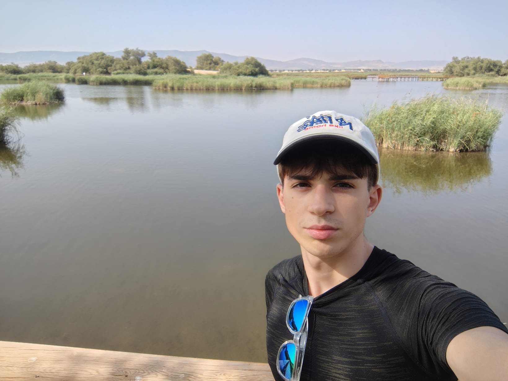

Soy Noel Rodero, y todo el trabajo que está redactado en esta web ha sido hecho por mí, salvo el apartado de agroecología, donde he tenido ayuda de mis compañeros de bancal. Estudio Ciencias Ambientales en la UAH, así que no tengo conocimientos súper profesionales de nada en concreto, simplemente me gusta hacer terrarios y las cosas relacionadas con las plantas y esas cosas.
El descubrimiento en YouTube
Mi gusto por los terrarios surgió cuando hace unos 4 o 5 años me apareció en YouTube un vídeo del canal de SerpaDesign. Ver cómo usaba cosas del día a día y plantas sencillas para crear ecosistemas en miniatura los cuales estaban vivos y eran autosuficientes me gustó mucho y decidí hacerlo por mi cuenta.
Su canal tiene un enfoque muy bueno ya que muestra el proceso paso a paso y te explica por qué toma cada decisión. Esa forma de enseñar fue la que me hizo dar el paso de hacer mi propio terrario y desde entonces he hecho otros 2 y he cultivado mi propio huerto.
La realidad: mi primer gran error
De todas formas, por muy ideal que parezcan mis trabajos en la web he de decir que no es así, mi primer terrario tuve que rehacerlo 3 veces hasta que conseguí que funcionase por cuenta propia sin tener que añadir nada de nada, y desde entonces los otros 2 posteriores ya me han salido bien. El principal error que cometí fue equivocarme con las plantas e introducir bichos bola antes de tiempo, cosa que destruyó el terrario.
El propósito de EcoCristal
Decidí crear esta web porque mis intentos de crear terrarios me enseñaron más que cualquier guía genérica de internet. Aprendí a base de prueba y error con mis plantas, entender cómo funcionan los ciclos de un ecosistema y respetar los ciclos de adaptación de cada ecosistema.
EcoCristal nace precisamente de eso. Quería (y quiero) crear un espacio que a mí me hubiese gustado encontrar cuando yo empecé mi primer proyecto. Lo que trato de compartir aquí es mi experiencia y mis mejores consejos, así como mis errores para que no te suceda lo mismo.
Hablemos
Si tienes cualquier tipo de duda sobre cómo hacer tu primer terrario, sobre por qué tus plantas se ven decaídas o simplemente quieres compartir cualquier avance, estoy disponible en la sección de contactos. Siempre estoy dispuesto a echar una mano a otros aficionados que están empezando en este fascinante mundo del paisajismo en miniatura.